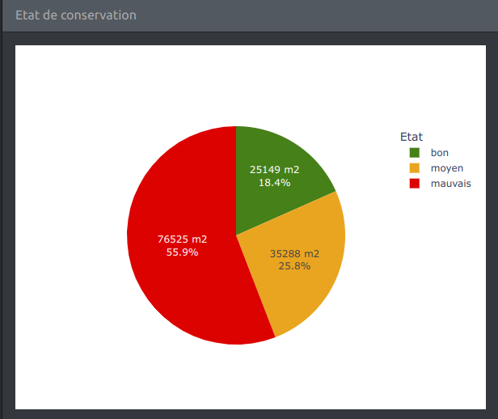
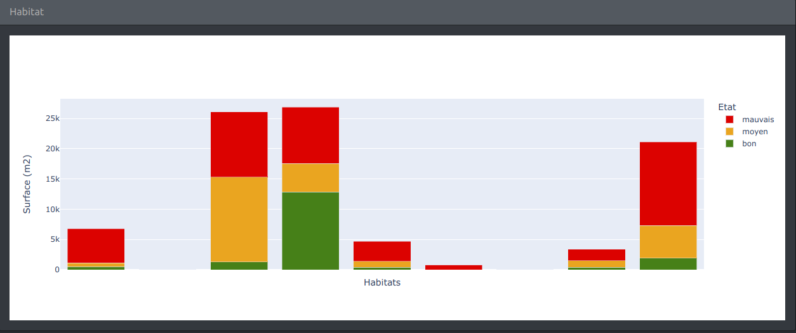

Application web pour la consultation des données relatives à l’état et à la gestion des zones humides sur le territoire du Parc national du Mercantour.
Le programme de suivi bénéficie du soutien financier de l’agence de l’eau Rhône - Méditerranée.
Deux menus déroulants permettent de sélectionner dans des listes (en ouvrant le menu ou en tapant une partie du nom recherché) la vallée ou le site à étudier.
Lorsqu’une vallée est sélectionnée, seuls les sites de cette vallée sont proposés au choix.
Lorsqu’aucune vallée n’est sélectionnée, tous les sites sont proposés au choix. Le choix d’un site entraîne la sélection automatique de la vallée de rattachement.
Il est également possible de sélectionner directement un site ou une vallée en cliquant sur l’une des cartes, sans utiliser les menus déroulants.
La carte de situation permet de voir d’un coup d’oeil la localisation géographique de la zone d’étude courante (l’ensemble du parc, une vallée ou un site). Un clic sur la carte permet de changer de vallée ou de revenir à l’emprise globale.


La carte des zones humide permet de sélectionner la zone à étudier (en cliquant) et d’obtenir des informations sur les objets affichés en les survolant (info-bulles).
Le mode de présentation dépend de la zone d’étude courante :


L’outil de paramétrage de la carte (en haut à droite de la carte) permet de choisir le fonds de carte et d’afficher de façon sélective des objets sur la carte (des info-bulles s’affichent en survolant les objets situés au premier plan):
Relevés Rhomeo sur 10 sites
Il est aussi possible de zoomer avec la souris ou en utilisant l’outil de zoom en haut à gauche de la carte. Le zoom manuel n’affecte pas le mode de présentation.

Ce graphique affiche en parts relatives l’état de conservation de la zone d’étude (parc, vallée, site)

Ce graphique affiche les habitats (surface et état) de la zone d’étude (parc, vallée, site ou zone humide lorsqu’une une zone humide est sélectionnée).
Les notices de gestion de la zone d’étude peuvent être téléchargées.
Les 10 sites qui font l’objet d’une étude des sols et de végétation Rhomeo sont représentés avec des marqueurs plus gros que les autres sites. L’affichage des relevés Rhomeo permet également de localiser ces sites (points violets sur la carte).
Lorsque la zone d’étude correspond à l’un de ces sites Rhomeo, les indicateurs Rhomeo calculés pour ce site s’affichent dans une boîte spécifique en dessous des mesures de gestion.